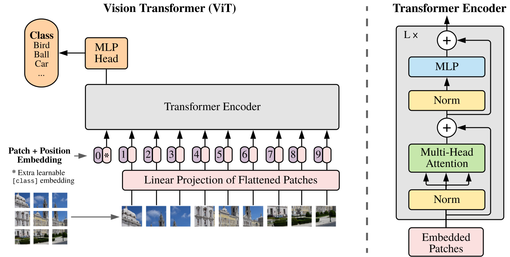
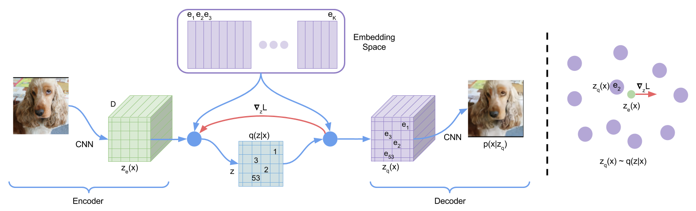
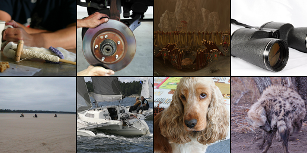
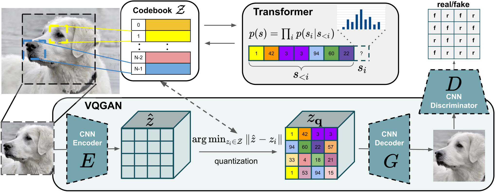
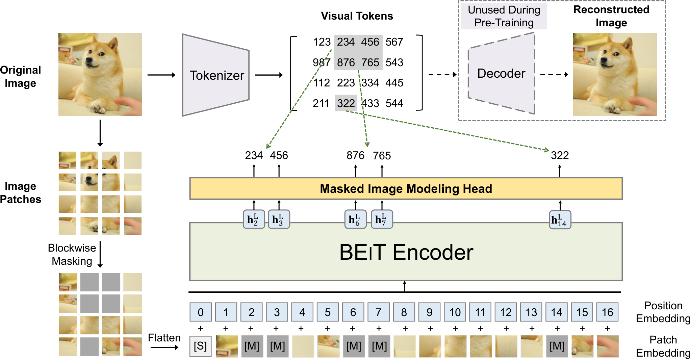

第 2 章 Tokenization：文本 BPE 与视觉 Token 化
💡 本章导读
Transformer 只认识一种输入：token 序列。无论是英文句子、中文段落，还是一张 1024×1024 的图片，进入模型之前都必须被切成一串离散符号并映射为向量。这一步远比它看起来重要：文本侧，BPE 词表决定了中文/代码/数学公式的"计费单价"与模型拼写能力；多模态侧，"一张图值多少 token"直接决定了上下文预算、显存占用与训练成本——一张高分辨率图动辄上千个视觉 token，相当于几千字的文章。本章前半程把文本 tokenization 讲透（BPE 完整手工演算、WordPiece/Unigram/SentencePiece、特殊 token 与聊天模板），后半程给出视觉 token 化的两大路线：连续路线（ViT patch embedding，主流 VLM 采用）与离散路线（VQ-VAE/VQGAN 视觉词表，Chameleon、Emu3 等原生多模态模型采用），并用统一公式估算任意配置下的图像 token 数。
1.为什么要有 Tokenization：词、字符与子词的三难权衡
把文本变成符号序列有三种朴素方案，各有致命缺陷：
按词切分：词表需要覆盖所有词。英语有数百万低频词与变体（tokenization/tokenizing），中文分词本身是难题；更糟的是新词（人名、网络用语、代码标识符）不断出现，导致词表外（Out-of-Vocabulary, OOV）问题——OOV 词只能丢弃或映射为 [UNK]，信息直接丢失。词表大到百万级时，embedding 矩阵（$|V| \times d$）也吃掉海量参数。
按字符切分：序列无限延长。一个英文单词平均 5 字符、一段中文每字一个符号，1024 token 的上下文只装得下一两百个词——自注意力的 $O(L^2)$ 复杂度让长序列代价高昂；而且单字符语义太弱，模型需要更多层数才能"拼出"词义。
子词切分（Subword）：折中方案——高频词保持完整（the、的），低频词拆成有意义的部件（tokenization → token + ization），任何新词都能被部件覆盖，序列长度适中。这就是现代 LLM 的共同选择，其两个代表算法 BPE 与 Unigram 都源自 1994 年 Gage 提出的 BPE 压缩思想在 NLP 的复兴（Sennrich et al., ACL 2016，arXiv:1508.07909，首次用于机器翻译）。
一个容易被忽视的事实是：tokenization 的"质量"是模型能力的隐性上限。GPT-2 时代词表几乎不含中文 token，一个汉字被拆成 3 个 UTF-8 字节 token，同样的中文内容计费与上下文开销是英文的数倍；早期 LLM "不会数 strawberry 里有几个 r"，部分原因正是它看到的不是字母而是合并后的 token。2024 年后主流开源模型词表普遍扩到 100K–256K（LLaMA-3 约 128K、Qwen 约 152K），中文与代码的压缩率显著改善。
🕰 历史一刻：从数据压缩到神经网络输入
BPE（Byte Pair Encoding）1994 年由 Philip Gage 发表在 A New Algorithm for Data Compression，本是给文本压缩用的：反复把最频繁出现的字节对替换成新符号。2015–2016 年，Rico Sennrich 等人把它搬进神经机器翻译（arXiv:1508.07909），一举解决 OOV；2019 年 GPT-2 用字节级 BPE（先按 UTF-8 字节表示一切文本）彻底消灭了 OOV。同一条"最频繁对合并"的算法，三十年来从压缩工具变成所有 LLM 的输入接口，最后又扩展到视觉——第 7 节你会看到，Chameleon 连图片都是用 BPE 思想"合并"出来的。
2.BPE 完整算法与手工演算
2.1 训练算法：两行循环
BPE 训练只做一件事：统计当前语料中最频繁的相邻符号对，把它合并成一个新符号，重复。形式化：给定词频词典 $\{w_i: c_i\}$（先把每个词拆成字符序列），重复以下步骤直到词表达到目标大小：
训练产物是两部分：词表（基础字符 + 所有合并产生的符号）与合并规则表（按学习顺序排列）。推理（encode）时新词必须按训练时学到规则的顺序逐条应用合并——顺序本身就是规则的一部分。
2.2 手工演算：四个词训出一个小词表
用 Sennrich 论文的经典例子完整演算。语料（词尾加结束符 </w> 以区分词中与词尾形态）：low×5, lower×2, newest×6, widest×3。初始拆分与相邻对统计：
| 轮次 | 最高频相邻对（频次） | 合并后语料状态 |
|---|---|---|
| 初始 | — | l o w </w> ×5；l o w e r </w> ×2；n e w e s t </w> ×6；w i d e s t </w> ×3 |
| 合并 1 | (e,s) → 9（与 (s,t)、(t,</w>) 并列 9，平局任意打破） | n e w es t；w i d es t（low 系不变） |
| 合并 2 | (es,t) → 9 | n e w est；w i d est |
| 合并 3 | (est,</w>) → 9（newest 6 次 + widest 3 次；词尾位置才出现） | n e w est</w>；w i d est</w>——注意 widest 中的 w 与 est 不相邻（隔着 i d），不会被误合并 |
| 合并 4 | (l,o) → 7（low 5 + lower 2） | lo w；lo w e r |
| 合并 5 | (lo,w) → 7 | low；low e r |
五轮之后词表包含基础字符、</w> 与 es, est, est</w>, lo, low。现在看推理：编码训练集内的 newest 得到 n e w est；编码从未见过的 lowest：按规则顺序应用——(e,s)→es、(es,t)→est、(l,o)→lo、(lo,w)→low——得到 low est；编码 slowest 得到 s low est。OOV 问题被部件化解决：这就是 BPE 的全部魔力。值得留意合并 3 的"词尾感知"：(est,</w>) 只在词尾位置成对，频次统计天然区分了词中与词尾形态；而机械的频次统计完全不管语义——LLM 偶尔在拼写类任务上出错（如数字切片不等长、字母计数），根源都能追到这类切片行为。
2.3 字节级 BPE：把 OOV 彻底埋葬
字符级 BPE 有个小尾巴：基础字符表是有限的，遇到训练语料没出现过的 Unicode 字符仍会 OOV。GPT-2（2019）的解决方案简单粗暴：先把文本无损映射为 UTF-8 字节流（基础符号恰 256 个，覆盖一切字符串），再在字节上跑 BPE。代价是常见字符要"绕道"：英文每个字母本来就是 1 字节没问题；中文常用字是 3 字节，若词表没有中文字节合并序列，一个汉字 = 3 个 token。这也是各模型词表"军备竞赛"的由来：Qwen 系列词表约 152K，为中文、代码与数学符号单独学了海量合并序列；LLaMA-3 用 128K 词表把多语言压缩率大幅优化。作为对照，用 Python 的 tiktoken（OpenAI 分词库）数一数就能感受到差距——同一句中文，GPT-2 词表可能是 6+ token，现代词表 2–3 token。
from tokenizers import Tokenizer, models, trainers, pre_tokenizers, decoders
# 从零训练一个字节级 BPE（HuggingFace tokenizers 库，与 GPT-2 同款算法）
tok = Tokenizer(models.BPE(unk_token=None)) # 字节级 BPE 无需 UNK
tok.pre_tokenizer = pre_tokenizers.ByteLevel(add_prefix_space=False)
tok.decoder = decoders.ByteLevel() # 解码时正确还原空格/中文
trainer = trainers.BpeTrainer(
vocab_size=500, # 演示用小词表；LLM 实际 3 万–25 万
special_tokens=["<|endoftext|>", "<|user|>", "<|assistant|>"],
show_progress=False,
)
corpus = ["low low low lower newest newest newest widest", "另一个例子：多模态大模型"] * 200
tok.train_from_iterator(corpus, trainer)
print(tok.encode("lowest").tokens) # 类似 ['low', 'est'] 的切片 —— 按训练顺序应用合并规则
print(tok.encode("多模态").tokens) # 小词表下退化为 UTF-8 字节 token（3 字节/汉字）
print(tok.decode(tok.encode("lowest").ids)) # 'lowest' —— 无损还原3.WordPiece、Unigram 与 SentencePiece
3.1 WordPiece：换一个评分函数的 BPE
BERT（2018）使用的 WordPiece 与 BPE 框架相同（合并最频繁对），只有一处差异——合并的评分不是原始频次，而是"似然增益"：
直觉：如果 $a$、$b$ 各自出现很多但拼起来很少，说明二者共现只是巧合，不值得合并；只有"拼起来比分开常见得多"的对才合并。这会偏向保留语义内聚的子词。推理端 WordPiece 用贪心最长匹配（longest-match-first），未登录词退化为字符并加 ## 前缀标记词中位置，彻底无法覆盖时输出 [UNK]——BERT 词表（30522）因此仍存在 UNK，而字节级 BPE 没有。
3.2 Unigram：概率模型 + 剪枝
Unigram（Kudo, ACL 2018，arXiv:1804.10959）思路完全相反：不从小符号逐步合并，而是从一个超大候选词表出发逐步删除。假设每个 token 独立产生（一元语言模型），词 $x$ 的概率是其所有可能切分 $S(x)$ 概率之和：
训练用 EM 风格交替：E 步用 Viterbi（动态规划，转移方程 $V(i) = \max_j V(j)\cdot p(x_{j+1..i})$，复杂度 $O(|x|^2)$）或全切分求和，统计每个 token 的期望贡献；M 步按贡献重估 $p(t) = \frac{\text{贡献}(t)}{\sum_t \text{贡献}(t)}$；然后按"删除该 token 会让语料似然下降多少"排序，砍掉尾部（或对每次合并/删除做似然比检验）。Unigram 的额外礼物是子词正则化（subword regularization）：训练时按概率采样次优切分，免费获得数据增强，对小数据集鲁棒性提升明显。T5、ALBERT 与许多多语言模型采用 Unigram。
3.3 SentencePiece：语言无关的工程封装
SentencePiece（Kudo & Richardson, EMNLP 2018，arXiv:1808.06226）不是新算法，而是把上述算法做成语言无关、端到端可逆的工具箱：输入原始文本流（不做预分词、不假设空格分词），把空格当作普通字符 ▁（U+2581）参与训练，从而中文、日文、泰文等无空格语言一视同仁；解码完全可逆，encode(decode(x)) == x。LLaMA 系列、T5、XLM-R 都是 SentencePiece 用户（LLaMA 用 SentencePiece-BPE，50000 词表）。三者的取舍总结如下表。
| 维度 | BPE | WordPiece | Unigram |
|---|---|---|---|
| 建词表方向 | 自底向上合并 | 自底向上合并 | 自顶向下剪枝 |
| 核心准则 | 相邻对频次最高 | 频次/(频率乘积) 似然比 | 删除后语料似然损失最小 |
| 概率模型 | 无（贪心） | 无（贪心） | 有（一元 LM + Viterbi） |
| 切分唯一性 | 按规则顺序确定 | 贪心最长匹配 | 可多解（可采样 → 数据增强） |
| 代表模型 | GPT-2/3/4、LLaMA、Qwen | BERT、DistilBERT、Electra | T5、ALBERT、mBART |
| OOV 处理 | 字节级变体后无 OOV | 退化为字符 → [UNK] 兜底 | 覆盖字符集内无 OOV |
from transformers import AutoTokenizer
# 三个时代、三种词表的对照实验
toks = {
"GPT-2 (50257)": AutoTokenizer.from_pretrained("openai-community/gpt2"),
"BERT (30522)": AutoTokenizer.from_pretrained("google-bert/bert-base-chinese"),
"Qwen2.5 (152K)": AutoTokenizer.from_pretrained("Qwen/Qwen2.5-7B-Instruct"),
}
text = "多模态大模型 Multimodal Large Language Model"
for name, tok in toks.items():
ids = tok(text)["input_ids"]
print(f"{name:18s} token 数 = {len(ids):3d} -> {tok.convert_ids_to_tokens(ids)[:12]}")
# 典型输出：GPT-2 把每个汉字拆成 3 个字节 token（中文开销最大）；
# BERT-Chinese 按字切分；Qwen 词表含中文常用词，token 数最少。
# 分词器是"无损往返"的，永远用 decode 验证你的预处理没有悄悄改字符：
assert toks["Qwen2.5 (152K)"].decode(toks["Qwen2.5 (152K)"](text)["input_ids"]) == text💡 技巧：把 tokenizer 当显微镜
调试任何 LLM/VLM 输入问题的第一步：打印 tok.convert_ids_to_tokens(ids)。常见发现包括——系统提示词里的换行被合并成 ĊĊ；数字被切成不等长片段（1234 可能是 12+34，导致算术不稳定）；代码缩进被 ĠĠĠĠ 表示且不同文件风格不一。多模态模型还有专属彩蛋：<|image_pad|> 的数量就是视觉 token 数，一条 print 就能验证图像到底占了多少上下文。线上服务计费与限流也按 token 计，中文项目先实测压缩率再估算成本。
4.特殊 Token 与聊天模板：多模态的"语法标记"
4.1 文本侧：从 [CLS] 到 ChatML
除了从语料学到的子词，每个分词器词表里还有一小撮人工添加的特殊 token（special tokens）：它们不参与 BPE 合并、永远作为整体出现，承担结构化职能。[CLS]/[SEP]/[MASK]/[PAD] 是 BERT 的四大件；GPT 系用 <|endoftext|> 标记文档边界；对话模型普遍采用 ChatML 风格的多角色标记（Qwen 的 <|im_start|>/<|im_end|>、Llama 3 的 <|begin_of_text|> + header token、Mistral 的 [INST]）。这些 token 本质上是给纯序列模型"恢复"出对话结构——模型从没有结构的信息流里学出"系统提示之后该听用户的、im_end 之后就该闭嘴"的行为。
把这些标记拼进输入的规则叫聊天模板（chat template）：一段存在 tokenizer 配置里的 Jinja2 模板。手动拼字符串是最常见的训练/推理事故来源（角色标记打错一个字符，模型就当普通文本处理），务必使用 apply_chat_template。
4.2 多模态特殊 token：图像在文本流里的"占位符"
多模态模型在词表里追加了图像专属标记，最典型的是 LLaVA 的 <image> 与 Qwen2-VL 的三件套 <|vision_start|> + <|image_pad|>×N + <|vision_end|>。机制值得精确理解：占位符扩张（placeholder expansion）——用户输入里只有 1 个 <image> 标记，processor/模型前向时会按图像实际尺寸把它扩张成 N 个连续的 embedding（LLaVA 用 576 个 patch 特征直接替换，Qwen2-VL 则把 <|image_pad|> 重复 N 次），再与文本 embedding 拼接成统一序列。视频有专门的 <|video_pad|>；Grounding 模型还嵌 <box>/<|box_start|> 类坐标标记（第 21 章）。新增特殊 token 必须同步做 resize_token_embeddings（为它们在 embedding 矩阵里加行）并在训练中让模型学会其含义——LLaVA 论文专门验证了：随机初始化的 <image> embedding 在第一阶段对齐训练中被"推"到词嵌入空间里文本描述密集的区域。
from transformers import AutoTokenizer, AutoProcessor
import requests
from PIL import Image
# 1) 纯文本聊天模板：永远不要手拼角色标记
tok = AutoTokenizer.from_pretrained("Qwen/Qwen2.5-7B-Instruct")
messages = [
{"role": "system", "content": "你是一个多模态助手。"},
{"role": "user", "content": "<image>\n这张图里有什么？"},
]
print(tok.apply_chat_template(messages, tokenize=False, add_generation_prompt=True))
# <|im_start|>system
# 你是一个多模态助手。<|im_end|>
# <|im_start|>user
# <image>
# 这张图里有什么？<|im_end|>
# <|im_start|>assistant
#
# 2) Qwen2-VL 处理器：占位符扩张的真实管线（图像 -> <|image_pad|> × N）
proc = AutoProcessor.from_pretrained("Qwen/Qwen2-VL-7B-Instruct")
mm_msg = [{"role": "user", "content": [
{"type": "image"},
{"type": "text", "text": "这是什么？"},
]}]
prompt = proc.apply_chat_template(mm_msg, tokenize=False, add_generation_prompt=True)
img = Image.open(requests.get("https://qianwen-res.oss-cn-beijing.aliyuncs.com/Qwen-VL/assets/demo.jpeg", stream=True).raw)
inputs = proc(text=[prompt], images=[img], return_tensors="pt")
pad_id = proc.tokenizer.convert_tokens_to_ids("<|image_pad|>")
n_vis = (inputs["input_ids"] == pad_id).sum().item()
print("序列总长:", inputs["input_ids"].shape[1], "| 视觉 token 数:", n_vis)
# 图像越大 n_vis 越大（动态分辨率）；这就是"一张图值多少 token"的直接测量方法⚠️ 陷阱：多模态 token 化的四个高频事故
（1）占位符与特征错位：自己重写前向时，<image> 占位符数量与视觉编码器输出 patch 数对不上（忘了 merge/忘了 tile），表现为模型"看不懂图"但文本正常。（2）loss 掩码：SFT 时只对回答部分计算交叉熵，系统提示、用户问题与图像 token 都要置为 -100——忘了掩码会训练出"复读问题"的模型。（3）图内文字 vs 提示注入：图像 OCR 出的文本是"不可信输入"，与特殊 token 拼接时可能构造出伪指令（第 41 章 prompt injection）。（4）计费/限流按扩张后的 token 数：API 侧一张高分辨率图折算成百上千 token，比提示词本身贵得多，先查文档的图像 token 计算规则（如 GPT-4V 按 512px tile 计）。
5.视觉 Token 化路线 A：Patch Embedding（ViT 式，连续向量）
现在进入本章的视觉部分。多模态模型里"图像变成 token"有两条根本不同的路线：路线 A 把图像切块后映射成连续向量（不做离散化），供 LLM 直接当输入特征；路线 B 把图像编码成离散符号——图像自己也有一个"词表"。主流理解型 VLM（LLaVA、Qwen-VL、InternVL）全部走路线 A；原生生成型模型（Chameleon、Emu3、DALL-E）走路线 B。
路线 A 的标准形式来自 ViT（Dosovitskiy et al., ICLR 2021，arXiv:2010.11929）：把图像 $x \in \mathbb{R}^{H \times W \times 3}$ 切成 $N$ 个 $P \times P$ 的图块（patch），展平后线性投影成 $d$ 维向量，加上位置嵌入：
一个精巧的巧合：ViT-B 的配置 $P=16, d=768$，每块展平维度 $16\times16\times3 = 768$ 恰好等于模型宽度——所以"展平+线性层"可以用一个 stride=kernel_size=P 的卷积一步实现，这也是所有开源实现（timm、transformers）的写法。[CLS] token 借鉴 BERT，用于汇聚全局信息；位置嵌入默认用可学习的一维序列（ViT 原文发现 1D 与 2D 效果相当）。

import torch
import torch.nn as nn
class PatchEmbed(nn.Module):
"""ViT 式 patch embedding：stride=P 卷积一步完成「切块 + 展平 + 线性投影」"""
def __init__(self, img_size=224, patch_size=16, in_chans=3, embed_dim=768):
super().__init__()
self.grid = img_size // patch_size # 每边 patch 数
self.num_patches = self.grid * self.grid
self.proj = nn.Conv2d(in_chans, embed_dim,
kernel_size=patch_size, stride=patch_size)
self.pos = nn.Parameter(torch.zeros(1, self.num_patches, embed_dim)) # 可学习位置嵌入
nn.init.trunc_normal_(self.pos, std=0.02)
def forward(self, x): # x: [B, 3, H, W]
feats = self.proj(x) # [B, d, H/P, W/P] —— 每个空间位置一个 token
tokens = feats.flatten(2).transpose(1, 2) # [B, N, d]
return tokens + self.pos[:, : tokens.size(1)]
pe = PatchEmbed(img_size=224, patch_size=16)
out = pe(torch.randn(2, 3, 224, 224))
print(out.shape) # torch.Size([2, 196, 768])
def count_vis_tokens(H, W, patch=14, merge=1):
"""任意 VLM 的视觉 token 估算：merge 为后续 2×2/4×4 压缩比例（每边）"""
return (H // patch) * (W // patch) // (merge * merge)
print(count_vis_tokens(336, 336, patch=14)) # 576 （LLaVA-1.5，无压缩）
print(count_vis_tokens(896, 672, patch=14, merge=2)) # 768 （Qwen2-VL 风格 2×2 合并）
print(count_vis_tokens(1024, 768, patch=16, merge=2))# 1536💡 技巧：分辨率、patch 大小与"感知粒度"
同样的图像，$P=14$ 与 $P=16$ 的差异不只是 token 数：小 patch 保留更细的文字与小物体信息，但 token 数按 $1/P^2$ 膨胀。LLaVA-1.5 把 CLIP 的 224 输入升到 336，仅此一改就在众多基准上白捡几个点；Qwen2-VL 干脆放弃固定分辨率，每个图用"尽量还原原生分辨率"的动态网格（NaViT 式 patch n' pack，第 14 章）。实践准则：文本密集的输入（文档、图表）按"能看清字"给分辨率，语义场景（分类、检索）分辨率可以很低。另一个经验：2×2 合并（token 数 ÷4）几乎是"免费"的——信息冗余度高，Qwen2-VL 与 InternVL 都默认做。
6.视觉 Token 化路线 B：离散视觉词表（VQ-VAE / VQGAN）
路线 B 的目标激进得多：让图像过一遍"分词器"，把 $H\times W\times 3$ 的像素张量变成一串离散码（比如 1024 个、每个取值 0–8191），这样图像就能和文本用同一套自回归目标（预测下一个 token）训练与生成。核心问题是离散化的梯度障碍：argmin 查表不可导。解决方案是 2017 年的 VQ-VAE。
📄 论文精读：VQ-VAE（van den Oord et al., NeurIPS 2017，arXiv:1711.00937）
问题：VAE 的连续潜变量采样会带来"模糊"与不可控，而离散表示（像语言一样）更利于先验建模；但离散变量无法直接反向传播。方法：编码器输出 $\mathbf{z}_e(\mathbf{x})$ 后做最近邻查表量化为码本（codebook）向量 $\mathbf{e}_k$，解码器只看量化后的 $\mathbf{z}_q$；训练目标为三项之和：
$$\mathcal{L} = \underbrace{-\log p(\mathbf{x}\mid \mathbf{z}_q)}_{\text{重建}} + \underbrace{\lVert \mathrm{sg}[\mathbf{z}_e] - \mathbf{e}\rVert_2^2}_{\text{码本损失（动 e）}} + \beta\underbrace{\lVert \mathbf{z}_e - \mathrm{sg}[\mathbf{e}]\rVert_2^2}_{\text{承诺损失（拴住编码器）}}$$
其中 sg[·] 是 stop-gradient。关键结果：在 CIFAR-10/ImageNet/Omniglot 上以极少的离散潜变量（如 32×32×1）实现逼真重建，并为无监督表示学习提供了可用向量。为什么重要：它发明了"图像的词表"——今天 Chameleon、Emu3 的视觉 tokenizer、第 20 章统一模型、BEiT 的预训练，全部建立在这个量化思想上。延伸阅读：VQ-VAE-2（层级码本）、VQGAN（加判别器）、DALL-E 的 dVAE（8192 码本 + Gumbel-softmax）。
6.1 直通估计器（Straight-Through Estimator）推导
量化算子 $q(\mathbf{z}) = \mathbf{e}_{k^*},\; k^* = \arg\min_j \lVert \mathbf{z} - \mathbf{e}_j\rVert_2$ 是分段常值函数：对输入的导数几乎处处为 0，梯度无法从解码器流回编码器。VQ-VAE 的处理是直通估计器（Straight-Through Estimator, STE）：前向时用量化值，反向时假装量化不存在——把解码器对 $\mathbf{z}_q$ 的梯度原样拷贝给 $\mathbf{z}_e$：
验证一下：$\mathbf{z}_q^{\text{ste}}$ 前向数值上等于 $\mathbf{z}_q$（$\mathbf{z}_e + (\mathbf{z}_q-\mathbf{z}_e) = \mathbf{z}_q$）；求导时 $\mathrm{sg}[\cdot]$ 部分为常数，$\partial \mathbf{z}_q^{\text{ste}}/\partial \mathbf{z}_e = \partial\mathbf{z}_e/\partial\mathbf{z}_e = I$，梯度直通。数学上这是"恒等映射作为量化导数的零阶代理"，与第 23 章 Gumbel-softmax、二值网络的 STE 同属一族。码本本身不可导（查表），所以用两个"搬运损失"训练：码本损失把 $\mathbf{e}$ 拉向编码器输出（K-means 质心更新视角），承诺损失让编码器输出别乱跑；实践中更稳定的做法是 EMA 更新——码本向量取其被分配样本的指数滑动平均，完全绕开码本损失的梯度问题。
离散化还有著名的失败模式：码本坍塌——绝大部分码从未被使用（死码），重建只依赖少数几个高频码，图像细节全丢。工程对策：死码重启（把长期未用的码重新初始化为当前 batch 的随机编码器输出）、EMA + 高熵正则、以及控制码本维度别太大。


6.2 VQGAN：给离散词表装上"高清镜头"与"语言模型"
VQ-VAE 的重建对生成任务还不够锐利（MSE 型重建偏爱糊图）。VQGAN（Esser et al., CVPR 2021，arXiv:2012.09841，原题 Taming Transformers）做了两件事：（1）感知级重建——在重建损失外叠加感知损失（LPIPS，用 VGG 特征比较）与分块判别器（patch-GAN，只判别局部块的真实性），并用自适应权重平衡两者：$\lambda = \nabla_{L_{\text{GAN}}}\mathcal{L}_{\text{rec}} \big/ \nabla_{L_{\text{GAN}}}\mathcal{L}_{\text{GAN}}$，保证感知项的梯度量级永远主导；（2）自回归先验——训练一个 Transformer 在码序列上做下一码预测，于是"文生图"变成：文本编码 + Transformer 逐码生成 + 解码器出图。VQGAN 的下采样率 $f=16$（256×256 图 → 16×16 = 256 个码，码本 1024–16384 按配置），码序列比像素短三个数量级，Transformer 才"管得过来"。

import torch
import torch.nn as nn
import torch.nn.functional as F
class VectorQuantizer(nn.Module):
"""最小可用 VQ 层（B, D, H, W 输入），含 STE 与码本/承诺双损失"""
def __init__(self, num_codes=1024, code_dim=256, beta=0.25):
super().__init__()
self.codebook = nn.Embedding(num_codes, code_dim) # 视觉词表
nn.init.uniform_(self.codebook.weight, -1 / num_codes, 1 / num_codes)
self.beta = beta
def forward(self, z_e): # z_e: [B, D, H, W] 编码器输出
flat = z_e.permute(0, 2, 3, 1).reshape(-1, z_e.size(1)) # [BHW, D]
dist = (flat.unsqueeze(1) - self.codebook.weight.unsqueeze(0)) ** 2
dist = dist.sum(-1) # [BHW, K] 到各码的距离
idx = dist.argmin(dim=1) # 最近邻查表（不可导）
z_q = self.codebook(idx).view_as(z_e.permute(0, 2, 3, 1)).permute(0, 3, 1, 2)
loss_codebook = F.mse_loss(z_q, z_e.detach()) # 拉 e 向 z_e（EMA 可替代）
loss_commit = self.beta * F.mse_loss(z_e, z_q.detach()) # 拴住编码器
z_q_ste = z_e + (z_q - z_e).detach() # STE：前向 z_q，反向直通
return z_q_ste, idx.view(z_e.size(0), -1), loss_codebook + loss_commit
vq = VectorQuantizer()
z_e = torch.randn(2, 256, 16, 16, requires_grad=True) # 256×256 图像 → 16×16=256 个码
z_q, codes, vq_loss = vq(z_e)
print(codes.shape, codes.min().item(), codes.max().item()) # [2, 256]，取值 0–1023
print("重建用张量形状:", z_q.shape, "| VQ 损失:", vq_loss.item())路线 B 在多模态理解侧还有一个重要后代：BEiT（arXiv:2106.08254）把图像先离线量化成视觉 token，再在 token 上做 BERT 式掩码预训练——证明"离散视觉词表"同样支撑理解型预训练（后被 MAE 的连续掩码路线部分取代，第 14 章对比）。

7.连续 vs 离散：对比、选择与上下文预算
两条路线的本质差异可以浓缩成一张对比图：连续 token 保真度高（每个 patch 都是高维特征，信息无损传递给 LLM），但没有"生成"能力（LLM 无法采样输出一个向量图块），只能靠外挂解码器（扩散模型）出图；离散 token 与文本共享同一套预测目标，理解与生成在同一框架内闭环，但每张图的 1024 个码固定吞掉 1024 个上下文位置，且量化有不可逆信息损失。
7.1 图像 token 数量估算与上下文预算
统一估算公式（覆盖主流设计）：
代入实际模型（数字均可在对应论文/文档复核）：
| 模型 | 视觉输入 | 策略 | 每图 token 数 | 上下文 |
|---|---|---|---|---|
| LLaVA-1.5 | 336×336 固定 | CLIP ViT-L/14，无压缩 | 576 | 4K |
| Qwen2-VL / 2.5-VL | 原生任意分辨率 | NaViT 式动态网格 + 2×2 合并 | ≈ (H/28)×(W/28)，可配 min/max 像素 | 32K+（可扩展） |
| InternVL2 / 2.5 | 448×448 × 多 tile | 动态 tile + Pixel Shuffle（÷4） | 256 / tile | 8K–32K |
| MiniCPM-V 2.6 | 高分辨率切分 | LLM 侧 adapter 压缩（多至 96 token/图） | ≈96（视频每帧更低） | 端侧友好 |
| GPT-4V（API） | 512px tile 切分 | low/high 两档细节 | low=85；high=85+170/tile | 128K |
| Chameleon | 512×512 生成/输入 | VQGAN 离散码（码本 8192） | 1024（固定） | 4K |
算一笔账感受预算压力：假设对话上下文 4096 token，系统提示与对话占 800，剩余 3300。用 LLaVA-1.5（576/图）可以放 5 张图；换成 1344×896 的高分辨率图经 Qwen2-VL 动态网格（(1344/28)×(896/28) = 48×32 = 1536 token）只够 2 张；若是 Chameleon 的离散码（1024/图）同样只剩 3 张。视频更极端：16 帧 × 576 token = 9216，尚未压缩就已超过多数 4K 配置——所以第 31 章的帧采样与 token 压缩是视频理解的生死线。反过来，视觉 token 不是纯粹的负担：LLaVA-1.5 的消融显示保留全部 576 token 优于激进压缩，因为问答细节（计数、位置关系）散落在小 patch 里；"该压多少"取决于任务粒度，这正是第 15 章连接器设计的核心权衡。
🍳 实战配方：给你的多模态应用定 token 预算
第 1 步：明确任务的"最小可读分辨率"——纯语义问答 336–448px 足够；含文字/图表 ≥1024px 或启用 tile。第 2 步：按上表公式算 $N_{\text{vis}}$，留出 30% 上下文给生成与多轮历史。第 3 步：多图场景优先选带动态分辨率/压缩的模型（Qwen2-VL、InternVL2），而不是固定 576 token 的模型。第 4 步：视频应用先做帧采样（uniform 8–16 帧）再考虑每帧压缩到 64–196 token。第 5 步：上线前用第 4.2 节的 <|image_pad|> 计数法实测每种输入的真实 token 数，写入监控——多模态服务 80% 的超时与超额账单来自高分辨率图像。
8.本章自测
✏️ 自测（先独立作答，再看答案要点）
1. 在语料 {low×5, lower×2, newest×6, widest×3} 上，BPE 前 5 次合并依次是什么？平局如何处理？
答案要点：(e,s)→es（与 (s,t)、(t,</w>) 并列 9，任选其一）；(es,t)→est；(est,</w>)→est</w>（9）；(l,o)→lo；(lo,w)→low。平局按实现定义打破（如先出现者优先），规则顺序影响最终词表。
2. 字节级 BPE 为什么"彻底消灭 OOV"？中文在一个没有中文字节的词表里代价是什么？
答案要点：UTF-8 把任意字符串无损映射到 256 个字节符号，任何新字符都是字节组合；中文常用字占 3 字节，无中文合并序列时 1 汉字 ≈ 3 token，序列变长、计费变高、注意力被稀释。
3. WordPiece 与 BPE 的合并评分差异是什么？Unigram 与前两者的根本不同？
答案要点：WordPiece 用似然比 count(ab)/(count(a)·count(b))，BPE 用原始频次；Unigram 从大词表自顶向下剪枝，有显式概率模型（一元 LM），切分可不唯一，可做子词正则化数据增强。
4. 写出 VQ-VAE 的三项损失并解释 STE 的实现技巧；为什么码本会"坍塌"，怎么救？
答案要点：重建项 + 码本损失 ‖sg[z_e]−e‖²（EMA 可替代）+ 承诺损失 β‖z_e−sg[e]‖²；STE 用 z_e + sg[z_q−z_e] 实现前向取量化值、反向直通。坍塌：多数码死掉、重建信息退化；对策：死码重启、EMA 更新、控制码本维度。
5. 计算：ViT-L/14 在 336×336 输入下的视觉 token 数；Qwen2-VL 在 1344×896 输入下（2×2 合并）的 token 数。
答案要点：(336/14)² = 576；(1344/28)×(896/28) = 48×32 = 1536。高分辨率输入的 token 开销按面积线性增长，多图/视频场景必须压缩或降采样。
6. 为什么理解型 VLM（LLaVA）选连续视觉 token，而 Chameleon 必须用离散码？各自最大的代价？
答案要点：连续 token 保真、适合对齐理解，但 LLM 无法采样输出向量 → 不能自回归生图；离散码让图像进入与文本相同的下一 token 预测框架，理解生成统一，但量化有信息损失（文字/细节变糊）且每图固定吞约 1024 token 上下文。